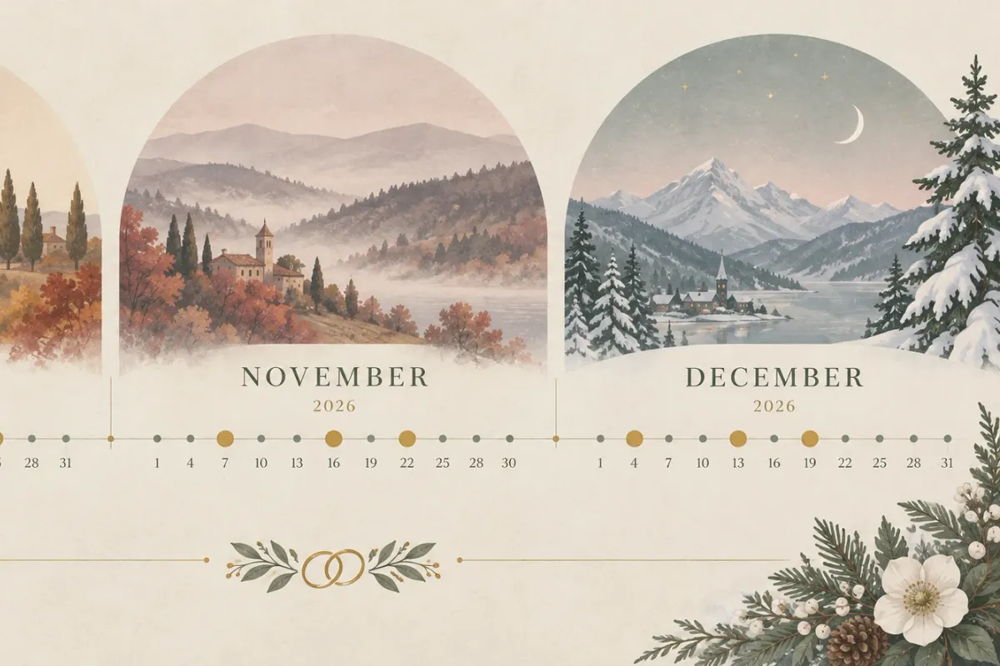
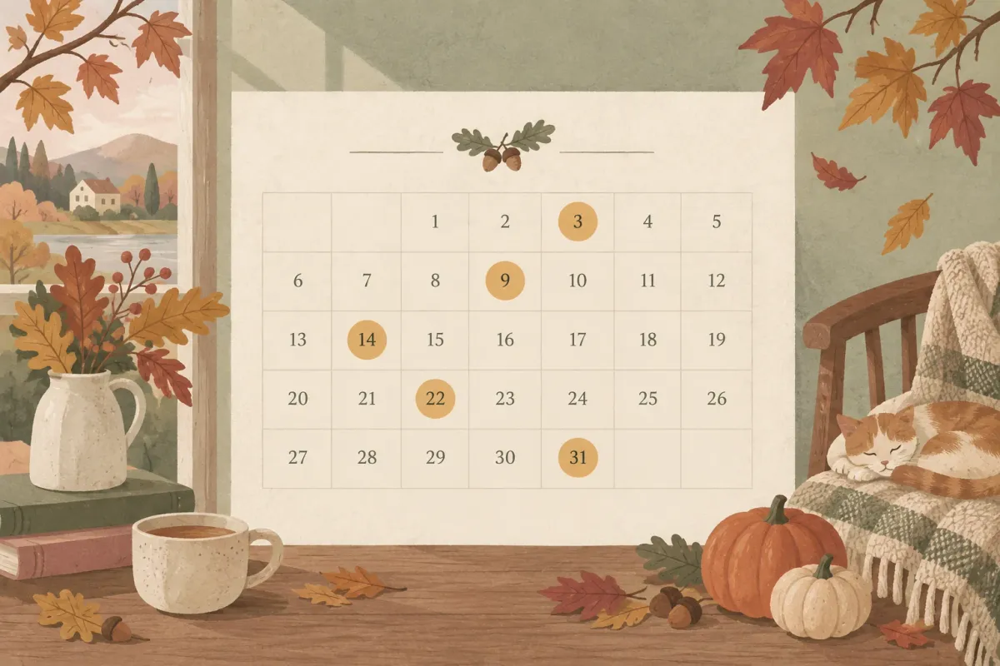

Cuối năm 2026 (tháng 10–12) có tổng cộng 21 ngày cưới đạt điểm tốt từ 70/100 trở lên, trong đó ngày 25/10 và 12/12 đạt cao nhất với 92 điểm. Bài viết liệt kê đầy đủ ngày đẹp theo từng tháng kèm giờ hoàng đạo, điểm số và lịch âm để bạn dễ chọn. Sau khi chốt ngày, công cụ xem ngày cưới Templexa giúp kiểm tra nhanh hợp tuổi vợ chồng — và tạo mẫu thiệp cưới online ngay trên cùng nền tảng. Nếu cần tra tháng đại lợi theo con giáp cô dâu, bài riêng đã có sẵn.
Cuối năm 2026 có bao nhiêu ngày cưới đẹp?
Có 21 ngày đạt điểm 70/100 trở lên: tháng 10 có 5 ngày, tháng 11 có 6 ngày, tháng 12 có 10 ngày. Điểm số tính dựa trên lịch âm, ngày hoàng đạo, hành/trực, sao tốt xấu và ngày kiêng (tam nương, nguyệt kỵ, dương công kỵ nhật). Hai ngày cao nhất cả quý là 25/10 (thứ Bảy) và 12/12 (thứ Sáu), đều đạt 92 điểm.
So sánh giữa ba tháng: tháng 12 dẫn đầu về số lượng (10 ngày), tháng 11 dẫn đầu về mật độ ngày điểm cao (2 ngày 86 điểm trong 6 ngày), còn tháng 10 ít ngày hơn nhưng có ngày đẹp nhất quý (25/10, 92 điểm). Bạn chọn tháng nào cũng có ngày tốt — vấn đề là chốt sớm để đặt sảnh kịp.
Cách chấm điểm ngày cưới của Templexa
Công cụ xem ngày cưới Templexa (dựa trên hệ thống hoàng đạo — hắc đạo trong lịch âm) tính điểm từ 0 đến 100 cho mỗi ngày, dựa trên 5 yếu tố:
- Thần sát (sao tốt/xấu): ngày hoàng đạo (Thanh Long, Minh Đường, Kim Quỹ, Thiên Đức, Ngọc Đường, Tư Mệnh) được cộng điểm, ngày hắc đạo bị trừ
- Thập nhị trực: Trực Thành, Khai, Định, Mãn hợp cưới hỏi — cộng 2 điểm; Trực Bình cộng 1; các trực còn lại không cộng
- Ngày kiêng: tam nương (mùng 3, 7, 13, 18, 22, 27 âm), nguyệt kỵ (mùng 5, 14, 23 âm), dương công kỵ nhật — bị trừ điểm nặng
- Cuối tuần: thứ Bảy, Chủ nhật cộng thêm điểm vì khách dễ thu xếp
- Tháng đại lợi: tháng hợp con giáp cô dâu — kiểm tra riêng theo năm sinh
Toàn bộ dữ liệu trong bài tính từ engine wedding-date.js của Templexa, đối chiếu lịch vạn niên 2026. Dưới đây là bảng tổng hợp 21 ngày đẹp cả ba tháng.
Bảng tổng hợp 21 ngày cưới đẹp cuối năm 2026

| Ngày dương | Thứ | Ngày âm | Can chi ngày | Thần (sao) | Trực | Điểm | Ghi chú |
|---|---|---|---|---|---|---|---|
| 25/10 | Bảy | 16/09 | Nhâm Thân | Kim Quỹ | Khai | 92 | Ngày đẹp nhất T10 |
| 13/10 | Hai | 04/09 | Canh Thân | Kim Quỹ | Khai | 86 | |
| 19/10 | CN | 10/09 | Bính Dần | Tư Mệnh | Định | 86 | |
| 31/10 | Bảy | 22/09 | Mậu Dần | Tư Mệnh | Định | 76 | Tam nương |
| 28/10 | Tư | 19/09 | Ất Hợi | Ngọc Đường | Trừ | 70 | |
| 06/11 | Năm | 28/09 | Giáp Thân | Kim Quỹ | Khai | 86 | Ngày đẹp nhất T11 |
| 17/11 | Hai | 09/10 | Ất Mùi | Minh Đường | Thành | 86 | |
| 23/11 | CN | 15/10 | Tân Sửu | Ngọc Đường | Mãn | 78 | |
| 14/11 | Bảy | 06/10 | Nhâm Thìn | Tư Mệnh | Chấp | 76 | |
| 29/11 | CN | 21/10 | Đinh Mùi | Minh Đường | Thành | 72 | Dương công kỵ |
| 09/11 | CN | 01/10 | Đinh Hợi | Bảo Quang | Kiến | 70 | |
| 12/12 | Sáu | 04/11 | Canh Thân | Thanh Long | Thành | 92 | Ngày đẹp nhất T12 |
| 24/12 | Tư | 16/11 | Nhâm Thân | Thanh Long | Thành | 86 | |
| 19/12 | Bảy | 11/11 | Đinh Mão | Ngọc Đường | Bình | 84 | |
| 03/12 | Tư | 25/10 | Tân Hợi | Bảo Quang | Kiến | 70 | |
| 08/12 | Hai | 30/10 | Bính Thìn | Tư Mệnh | Chấp | 70 | |
| 16/12 | Tư | 08/11 | Giáp Tý | Kim Quỹ | Kiến | 70 | |
| 17/12 | Năm | 09/11 | Ất Sửu | Bảo Quang | Trừ | 70 | |
| 25/12 | Năm | 17/11 | Quý Dậu | Minh Đường | Thu | 70 |
Dữ liệu tính từ công cụ xem ngày cưới Templexa (wedding-date.js), đối chiếu lịch âm 2026. Điểm >= 70 là mức tốt, >= 85 là rất tốt, >= 90 là xuất sắc.
Những ngày cưới đẹp nhất tháng 10/2026 là ngày nào?
Tháng 10 có 5 ngày đạt 70 điểm trở lên. Ngày đẹp nhất: 25/10 (92 điểm, thứ Bảy, Kim Quỹ — Trực Khai). Hai ngày 13/10 và 19/10 cũng đạt 86 điểm, phù hợp nếu bạn muốn cưới sớm trong tháng.
Chi tiết từng ngày tháng 10

25/10 (thứ Bảy, 16/09 âm, Nhâm Thân): 92 điểm — sao Kim Quỹ (hoàng đạo), Trực Khai, cuối tuần. Đây là ngày đẹp nhất tháng 10 và cũng là ngày đẹp nhất cả quý (ngang 12/12). Kim Quỹ kết hợp Trực Khai tạo ra tổ hợp hiếm gặp: vừa sao tốt vừa trực tốt. Cuối tuần nên khách mời dễ sắp xếp.
13/10 (thứ Hai, 04/09 âm, Canh Thân): 86 điểm — Kim Quỹ, Trực Khai. Cùng tổ hợp sao–trực với ngày 25/10, chỉ thiếu bonus cuối tuần. Cưới ngày thường giúp tiết kiệm 15–30% chi phí sảnh tiệc.
19/10 (Chủ nhật, 10/09 âm, Bính Dần): 86 điểm — Tư Mệnh (hoàng đạo), Trực Định. Cuối tuần, điểm cao, phù hợp với cặp đôi muốn cưới giữa tháng.
31/10 (thứ Bảy, 22/09 âm, Mậu Dần): 76 điểm — Tư Mệnh, Trực Định, nhưng rơi vào ngày Tam Nương (22 âm). Điểm vẫn trên 70 vì sao tốt bù trừ, song nếu gia đình kiêng tam nương thì bỏ qua.
28/10 (thứ Tư, 19/09 âm, Ất Hợi): 70 điểm — Ngọc Đường (hoàng đạo). Ngày giữa tuần, phù hợp nếu bạn ưu tiên tiết kiệm chi phí.
Tháng 10 rơi vào tháng mấy âm lịch?
Tháng 10/2026 dương lịch tương ứng tháng 9 âm lịch (can chi: Mậu Tuất). Đây không phải tháng cô hồn (tháng 7 âm đã qua từ tháng 8 dương). Tháng 9 âm là tháng đại lợi cho cô dâu tuổi Tý và Ngọ — nếu cô dâu nhà bạn thuộc hai con giáp này, tháng 10 dương là lựa chọn lý tưởng. Với con giáp khác, bạn tra bảng tháng đại lợi theo 12 con giáp để xác nhận.
Những ngày cưới đẹp nhất tháng 11/2026 là ngày nào?
Tháng 11 có 6 ngày đạt 70 điểm trở lên. Hai ngày đẹp nhất: 06/11 và 17/11 (đều 86 điểm). Đặc biệt, 14/11 (thứ Bảy, 76 điểm) và 23/11 (Chủ nhật, 78 điểm) là hai ngày cuối tuần thuận tiện cho tiệc cưới quy mô lớn.
Chi tiết từng ngày tháng 11
06/11 (thứ Năm, 28/09 âm, Giáp Thân): 86 điểm — Kim Quỹ, Trực Khai. Ngày đẹp nhất tháng 11, tổ hợp sao–trực mạnh. Cuối tuần kế bên (07–08/11) có thể dùng cho tiệc nếu cần.
17/11 (thứ Hai, 09/10 âm, Ất Mùi): 86 điểm — Minh Đường (hoàng đạo), Trực Thành. Minh Đường là sao hoàng đạo sáng nhất, kết hợp Trực Thành — trực hợp cưới hỏi. Ngày giữa tuần, chi phí sảnh tiết kiệm hơn.
23/11 (Chủ nhật, 15/10 âm, Tân Sửu): 78 điểm — Ngọc Đường, Trực Mãn. Cuối tuần, điểm khá. Lưu ý 15/10 âm là ngày rằm — một số gia đình kiêng cưới ngày rằm, nhưng engine không trừ điểm vì không thuộc nhóm ngày kiêng chính thống.
14/11 (thứ Bảy, 06/10 âm, Nhâm Thìn): 76 điểm — Tư Mệnh, cuối tuần. Phù hợp cho tiệc lớn, đặt sảnh dễ hơn so với các ngày 86 điểm rơi vào giữa tuần.
29/11 (Chủ nhật, 21/10 âm, Đinh Mùi): 72 điểm — Minh Đường, Trực Thành, nhưng dính Dương Công Kỵ Nhật nên bị trừ. Cuối tuần, vẫn trên mức tốt. Nếu gia đình không kiêng dương công kỵ, ngày này có sao và trực đều đẹp.
09/11 (Chủ nhật, 01/10 âm, Đinh Hợi): 70 điểm — Bảo Quang (hoàng đạo). Mùng 1 tháng 10 âm, ngày đầu tháng hợp khởi sự.
Tháng 11 rơi vào tháng 9–10 âm — tháng cô hồn đã qua chưa?
Tháng cô hồn (tháng 7 âm lịch) kết thúc từ cuối tháng 8 dương lịch 2026. Tháng 11 dương tương ứng tháng 9 âm (Mậu Tuất, nửa đầu) và tháng 10 âm (Kỷ Hợi, nửa sau) — đều là tháng tốt cho cưới hỏi. Lưu ý ngày nguyệt kỵ: mùng 5, 14, 23 âm — engine đã loại các ngày này khỏi danh sách trên.
Những ngày cưới đẹp nhất tháng 12/2026 là ngày nào?
Tháng 12 nhiều ngày đẹp nhất với 10 ngày đạt 70 điểm trở lên. Đỉnh cao: 12/12 (92 điểm, thứ Sáu, Thanh Long — Trực Thành) — ngày đẹp nhất cuối năm. Ngoài ra, 24/12 (86 điểm) và 19/12 (84 điểm, thứ Bảy) cũng nổi bật.
Chi tiết từng ngày tháng 12
12/12 (thứ Sáu, 04/11 âm, Canh Thân): 92 điểm — Thanh Long (hoàng đạo), Trực Thành, cuối tuần. Thanh Long là sao đứng đầu bộ 6 sao hoàng đạo, kết hợp Trực Thành tạo ra ngày cực đẹp. Thứ Sáu cho phép tổ chức tiệc tối, khách nghỉ cuối tuần ngay sau.
24/12 (thứ Tư, 16/11 âm, Nhâm Thân): 86 điểm — Thanh Long, Trực Thành. Cùng tổ hợp sao–trực với 12/12. Đêm Giáng sinh — nếu bạn thích không khí lễ hội, đây là ngày đặc biệt.
19/12 (thứ Bảy, 11/11 âm, Đinh Mão): 84 điểm — Ngọc Đường, Trực Bình. Cuối tuần, điểm cao thứ 3 trong tháng. Sảnh tiệc cuối tuần tháng 12 thường kín sớm — đặt trước 2–3 tháng là an toàn.
03/12 (thứ Tư, 25/10 âm, Tân Hợi): 70 điểm — Bảo Quang (hoàng đạo). Đầu tháng, giá sảnh thường rẻ hơn cuối tháng.
08/12 (thứ Hai, 30/10 âm, Bính Thìn): 70 điểm — Tư Mệnh. Ngày cuối tháng 10 âm.
16/12 (thứ Tư, 08/11 âm, Giáp Tý): 70 điểm — Kim Quỹ. Giữa tuần, ngày hoàng đạo sao tốt.
17/12 (thứ Năm, 09/11 âm, Ất Sửu): 70 điểm — Bảo Quang. Liền kề 16/12, bạn có thể chọn 1 trong 2 tuỳ lịch gia đình.
25/12 (thứ Năm, 17/11 âm, Quý Dậu): 70 điểm — Minh Đường. Ngày Giáng sinh, không khí lễ hội phương Tây hoà vào tiệc cưới.
Tháng 12 là cuối năm — đặt sảnh sớm và lưu ý thời tiết
Tháng 12 là cao điểm mùa cưới tại miền Bắc và miền Trung. Sảnh tiệc ở Hà Nội, Đà Nẵng, TP.HCM thường kín lịch cuối tuần từ tháng 9. Nếu bạn nhắm ngày 12/12 hoặc 19/12 (cuối tuần), hãy đặt sảnh ngay trong tháng 9 — chậm hơn có thể hết chỗ.
Thời tiết tháng 12: miền Bắc lạnh 15–20 độ C (chuẩn bị áo khoác cho khách ngoài trời), miền Nam se lạnh dễ chịu 22–28 độ C. Cả hai miền đều ít mưa, thuận lợi cho tiệc ngoài trời hoặc chụp ảnh pre-wedding.
Tra ngày cưới theo tuổi vợ chồng
Nhập năm sinh hai bạn — xem điểm số từng ngày cuối năm 2026 trong 5 giây, kèm kim lâu, hoang ốc, tam tai.
Cần tránh những ngày nào khi cưới cuối năm 2026?
Tránh ngày nguyệt kỵ (mùng 5, 14, 23 âm lịch hằng tháng), ngày tam nương (mùng 3, 7, 13, 18, 22, 27 âm), ngày hắc đạo và ngày xung tuổi cô dâu/chú rể. Engine Templexa đã loại ngày nguyệt kỵ và hắc đạo khỏi danh sách 21 ngày đẹp ở trên; ngày 31/10 có tam nương nhưng vẫn giữ vì sao tốt bù trừ (76 điểm).
Nguyệt kỵ, tam nương, sát chủ là gì?
- Nguyệt kỵ: mùng 5, 14, 23 âm — ba ngày mỗi tháng kiêng việc lớn (cưới, khai trương, động thổ). Nguồn gốc từ lịch pháp cổ Trung Hoa.
- Tam nương: mùng 3, 7, 13, 18, 22, 27 âm — sáu ngày kiêng cưới gả. Theo quan niệm dân gian, tam nương sát là ba cô gái bị oan, gây hại cho hôn nhân.
- Sát chủ: ngày xung với mệnh chủ nhà (cô dâu hoặc chú rể). Mỗi người có ngày sát chủ khác nhau tuỳ năm sinh.
- Dương công kỵ nhật: 13 ngày cố định trong năm do Dương Quân Tùng (phong thuỷ sư đời Đường) liệt kê. Ngày 29/11 trong danh sách trên dính loại này.
Cách kiểm tra ngày có xung tuổi
Mỗi cặp đôi có năm sinh khác nhau, nên ngày đẹp chung chưa chắc đẹp với bạn. Dùng công cụ xem ngày cưới Templexa để kiểm tra: nhập năm sinh cô dâu và chú rể, hệ thống tự tính kim lâu, hoang ốc, tam tai và trả về danh sách ngày phù hợp riêng.
Chọn ngày cưới hợp tuổi vợ chồng như thế nào?
Kiểm tra 4 yếu tố: kim lâu theo tuổi cô dâu, hoang ốc theo tuổi chú rể, tam tai theo địa chi cả hai, tháng đại lợi theo con giáp cô dâu. Dùng công cụ xem ngày Templexa để tra nhanh — nhập năm sinh, kết quả hiện trong 5 giây.
Kim lâu, hoang ốc, tam tai — giải thích ngắn
Kim lâu tính theo tuổi mụ của cô dâu: năm rơi vào vị trí 1, 3, 6, 8 trong chu kỳ 8 năm thì phạm kim lâu. Phạm kim lâu ở mức "thân" (vị trí 1) kiêng nhiều nhất; mức "của" (vị trí 3) và "tự" (vị trí 8) nhẹ hơn, có thể hoá giải.
Hoang ốc tính tương tự nhưng theo tuổi chú rể. Tam tai dựa trên địa chi năm sinh: mỗi con giáp có 3 năm tam tai liên tiếp trong chu kỳ 12 năm. Năm 2026 (Bính Ngọ) — tuổi Thân, Tý, Thìn phạm tam tai.
Tháng đại lợi theo 12 con giáp
Mỗi con giáp cô dâu có 2 tháng đại lợi (tốt nhất) và 2 tháng tiểu lợi (tốt vừa) trong năm. Chọn tháng đại lợi giúp hôn nhân thuận lợi theo quan niệm dân gian. Bảng chi tiết có tại bài tháng đại lợi theo 12 con giáp cô dâu.
Nếu tháng đại lợi không có ngày cuối tuần nào >= 80 điểm, hãy chọn ngày giữa tuần điểm cao (86 điểm) rồi tổ chức tiệc vào cuối tuần liền kề. Lễ gia tiên và rước dâu vẫn đúng ngày đẹp, tiệc dời 1–2 ngày không ảnh hưởng phong thuỷ.
Đã chốt ngày cưới rồi — việc tiếp theo là gì?
Sau khi chốt ngày, 3 việc cần làm ngay: (1) đặt sảnh/nhà hàng, (2) lên danh sách khách mời, (3) làm thiệp mời và gửi trước 3–4 tuần. Ba việc này chạy song song — chậm một bước, đặc biệt cuối năm khi sảnh kín lịch, sẽ phải đổi ngày hoặc đổi sảnh.
Đặt sảnh sớm bao lâu?
Cuối năm (tháng 10–12) là cao điểm mùa cưới. Sảnh phổ thông (15–30 bàn) cần đặt trước 2–3 tháng; sảnh sang (trên 50 bàn) cần 4–6 tháng. Ngày cuối tuần điểm cao (25/10, 12/12, 19/12) có thể kín từ giữa năm — nếu bạn đang đọc bài này vào tháng 9, hãy gọi sảnh trong tuần này.
Tạo thiệp cưới online trong 10 phút với Templexa
Templexa có 102 mẫu thiệp cưới online (từ truyền thống, sang trọng đến hiện đại, hoa lá), giá từ 299.000 đ, giao trong 24 giờ. Mỗi thiệp đi kèm RSVP xác nhận tham dự và QR mừng cưới — khách mở link, xem thiệp, xác nhận, chuyển tiền — tất cả trên 1 trang, không cần cài app.
Nếu bạn chưa biết thiệp cưới online là gì và khác gì thiệp giấy, bài so sánh chi tiết đã có sẵn. Xem bảng giá thiệp cưới để chọn gói phù hợp ngân sách.
Chốt ngày đẹp → Đặt sảnh ngay → Làm thiệp mời trong 10 phút → Gửi qua Zalo/Messenger trước tiệc 3–4 tuần. Cuối năm 2026 có 21 ngày tốt, nhưng sảnh thì có hạn — ai nhanh người đó được.
Câu hỏi thường gặp
Cưới tháng 10 âm lịch (tháng 11 dương) có tốt không?
Tháng 10 âm lịch (tháng 11 dương lịch 2026) là tháng tốt để cưới. Tháng cô hồn (tháng 7 âm) đã qua từ lâu. Tháng 10 âm thuộc can chi Kỷ Hợi, có 6 ngày hoàng đạo đạt từ 70 điểm trở lên theo công cụ Templexa, trong đó 06/11 và 17/11 đạt 86 điểm.
Năm 2026 là năm con gì, mệnh gì, tuổi nào nên cưới?
Năm 2026 là năm Bính Ngọ, con Ngựa, mệnh Thiên Hà Thuỷ. Các tuổi hợp cưới năm Ngọ gồm Dần, Tuất (tam hợp) và Mùi (lục hợp). Tuổi xung: Tý (xung), Ngọ (tự hình), Sửu (hại). Tuy nhiên, hợp tuổi còn phụ thuộc vào năm sinh cụ thể của cô dâu và chú rể — dùng công cụ xem ngày cưới Templexa để tra chính xác.
Giờ hoàng đạo là gì, mỗi ngày có mấy giờ?
Giờ hoàng đạo là 6 khung giờ trong ngày được 6 sao tốt (Thanh Long, Minh Đường, Kim Quỹ, Thiên Đức, Ngọc Đường, Tư Mệnh) chiếu vào — hợp để khởi sự, cưới hỏi, ký kết. Mỗi ngày có đúng 6 giờ hoàng đạo và 6 giờ hắc đạo, xen kẽ nhau. Giờ cụ thể thay đổi theo ngày can chi.
Ngày hoàng đạo và ngày hắc đạo khác nhau thế nào?
Ngày hoàng đạo có sao tốt chiếu (Thanh Long, Minh Đường, Kim Quỹ, Thiên Đức, Ngọc Đường, Tư Mệnh), hợp cưới hỏi và khởi sự. Ngày hắc đạo có sao xấu chiếu (Thiên Hình, Chu Tước, Bạch Hổ, Thiên Lao, Huyền Vũ, Câu Trận), cần tránh việc lớn. Trong 12 ngày liên tiếp (theo Thập nhị trực), 6 ngày hoàng đạo và 6 ngày hắc đạo luân phiên.
Cưới ngày thường rẻ hơn cưới cuối tuần bao nhiêu?
Tiệc cưới ngày thường (thứ 2–6) rẻ hơn cuối tuần 15–30% tuỳ nhà hàng. Nhiều trung tâm tiệc cưới tại TP.HCM và Hà Nội còn tặng thêm bàn hoặc miễn phí trang trí cho ngày thường. Nếu chọn ngày hoàng đạo rơi vào giữa tuần (ví dụ 13/10, thứ Hai, 86 điểm), bạn vừa có ngày đẹp vừa tiết kiệm đáng kể.
Có nên cưới vào tháng Chạp (tháng 12 âm lịch) không?
Tháng Chạp (tháng 12 âm lịch, rơi vào khoảng tháng 1/2027) vẫn cưới được nếu chọn đúng ngày hoàng đạo và tránh ngày sát chủ, tam nương. Lưu ý: tháng 12 dương lịch 2026 tương ứng tháng 10–11 âm, không phải tháng Chạp. Tháng Chạp thực sự bắt đầu từ khoảng 21/01/2027.
Làm sao gửi thiệp mời online sau khi chốt ngày cưới?
Sau khi chốt ngày cưới, bạn chọn 1 trong 102 mẫu thiệp cưới online tại Templexa, điền thông tin (tên, ngày, địa điểm, ảnh cưới), nhận thiệp trong 24 giờ. Gửi qua Zalo, Messenger hoặc link trực tiếp. Thiệp có sẵn RSVP xác nhận tham dự và QR mừng cưới — khách chỉ cần mở link, không cần cài app.
Lời cuối
Cuối năm 2026 có 21 ngày cưới đẹp trải đều ba tháng 10, 11, 12 — từ ngày 92 điểm (25/10, 12/12) đến ngày 70 điểm vẫn đủ tốt để tổ chức. Điểm số chỉ là tham khảo; quan trọng hơn là ngày đó hợp tuổi hai bạn, phù hợp lịch gia đình và đặt được sảnh ưng ý.
Tra ngày cưới đẹp cuối năm 2026 theo tuổi vợ chồng miễn phí tại công cụ xem ngày cưới Templexa. Chọn xong ngày, ghé 102 mẫu thiệp cưới online để gửi thiệp mời trong ngày. Xem bảng giá thiệp hoặc liên hệ Zalo 0334 884 895 nếu cần tư vấn.